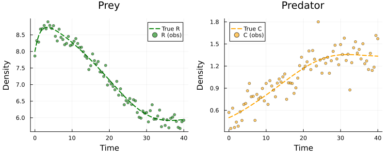
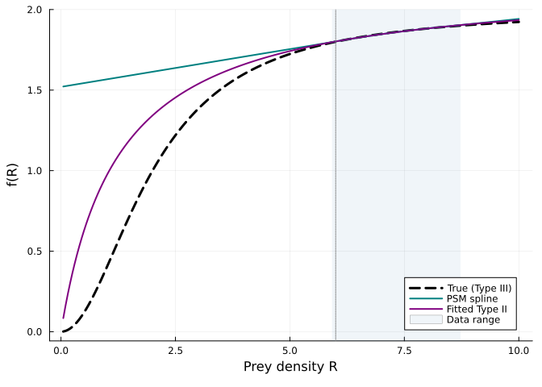
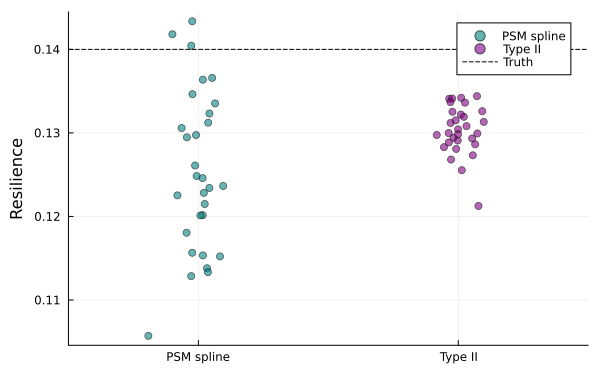
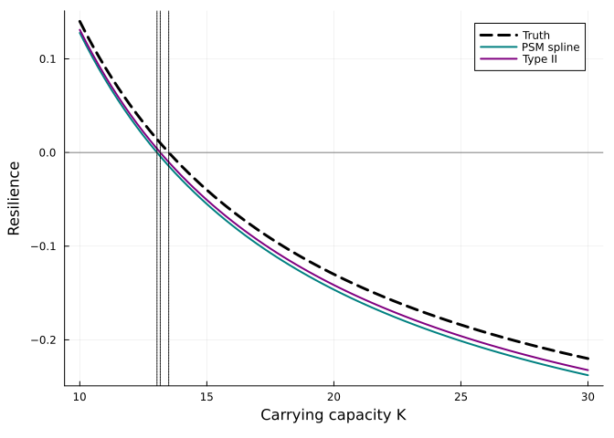

Resilience of a Fitted Equilibrium
Overview
A fitted model is often used to answer a question its data never asked directly: how quickly does the system return to equilibrium after a disturbance, and how close is it to losing stability? These are properties of the linearisation at the equilibrium, so they depend on the fitted functional response and its slope at the equilibrium. When the form of the response is assumed, uncertainty in the assumption is invisible in the intervals.
This vignette fits predator–prey data generated with a Holling Type III functional response in two ways:
- a partially specified model, with the response left as a penalised B-spline;
- a misspecified parametric model, assuming a Type II response.
It then compares, with bootstrap intervals,
- the resilience (the slowest return rate,
−max Re λ) and reactivity (the largest initial amplification rate) of the fitted equilibrium; - the enrichment threshold: the carrying capacity at which the equilibrium loses stability in a Hopf bifurcation (the paradox of enrichment).
The resilience calculations come from DynamicalResilience.jl: to_ode_problem turns a fitted PSM into an ordinary ODEProblem, steady_state and linearise give its equilibrium and Jacobian, metrics_over repeats this over bootstrap replicates, and resilience_along follows the equilibrium as a parameter changes.
[!TIP]
See Also
- Vignette 27: Predator–Prey Functional Response — recovering a Type II response with confidence intervals
- Vignette 29: Bootstrap — the bootstrap in detail
Setup
using PartiallySpecifiedModels
using PartiallySpecifiedModels: solve
using DynamicalResilience: steady_state, linearise, resilience, reactivity, resilience_along
using OrdinaryDiffEq
using Statistics, Random, Printf
import Optim
using Plots; default(fmt=:png)
Random.seed!(2026)TaskLocalRNG()The True Model
The Rosenzweig–MacArthur model with logistic prey growth,
\[\frac{dR}{dt} = r R \left(1 - \frac{R}{K}\right) - f(R)\,C, \qquad \frac{dC}{dt} = e\, f(R)\, C - d\, C,\]
with a sigmoid (Type III) response $f(R) = aR^2/(1 + ahR^2)$, $a = h = 0.5$, and $r = 1$, $K = 10$, $e = 0.5$, $d = 0.9$. The interior equilibrium is $R^* = 6$, $C^* = 4/3$, a stable focus: perturbations return as damped oscillations.
The same right-hand side serves the truth, the PSM and the Type II model: only p.f changes. The known parameters, including $K$, are fields of p, so they can be varied later.
f_true(R) = 0.5 * R^2 / (1 + 0.25 * R^2)
function rm!(du, u, p, t)
R, C = u
f = max(p.f(R), 0.0)
du[1] = p.r * R * (1 - R / p.K) - f * C
du[2] = p.e * f * C - p.d * C
end
known = (r = 1.0, K = 10.0, e = 0.5, d = 0.9)
truth = ODEProblem(rm!, [8.0, 0.5], (0.0, 40.0), merge((f = f_true,), known));Data
Both species are observed every half time unit with Gaussian noise ($\sigma = 0.15$).
data_t = collect(0.0:0.5:40.0)
sol_true = OrdinaryDiffEq.solve(truth, Tsit5(); saveat = data_t, abstol = 1e-10, reltol = 1e-10)
data = max.(reduce(hcat, sol_true.u)' .+ 0.15 .* randn(length(data_t), 2), 0.01);
Figure 1: Synthetic predator–prey data from the Type III model (σ = 0.15)
The true equilibrium
eq_true = steady_state(truth, [6.0, 1.3])
J_true = linearise(truth, eq_true.u)
@printf("R* = %.3f, C* = %.3f; resilience %.3f, reactivity %.3f\n",
eq_true.u..., resilience(J_true), reactivity(J_true))R* = 6.000, C* = 1.333; resilience 0.140, reactivity 0.751The equilibrium is reactive (reactivity \> 0): some perturbations grow at first before they decay.
Fit 1: Partially Specified Model
The functional response is a B-spline on $[0, 10]$, accessed as p.f; the other parameters are known.
uf = BSplineApproximator(:f, (0.0, 10.0), 10; initial = R -> 0.3 * R)
prob = PSMProblem(rm!, [8.0, 0.5], (0.0, 40.0), [uf];
data_times = data_t, data_values = data, obs_to_state = [1, 2],
known_params = known, likelihood = Gaussian(), solver = Tsit5())
fit = solve(prob, LAML(maxiters = 200, verbose = false))
@printf("data loss %.3f, EDF %.2f, stationarity %.1e\n",
fit.data_loss, fit.edf, fit.convergence.stationarity)data loss 3.692, EDF 2.95, stationarity 3.3e-07The fitted model is an ordinary ODEProblem; its equilibrium and Jacobian come from DynamicalResilience.jl, started near the equilibrium of interest.
ode = to_ode_problem(prob, fit)
eq_psm = steady_state(ode, [6.0, 1.3])
J_psm = linearise(ode, eq_psm.u)
@printf("R* = %.3f, C* = %.3f; resilience %.3f, reactivity %.3f\n",
eq_psm.u..., resilience(J_psm), reactivity(J_psm))R* = 5.956, C* = 1.338; resilience 0.128, reactivity 0.765Fit 2: Misspecified Type II
The parametric model assumes $f(R) = aR/(1 + ahR)$ and fits $\log a$ and $\log h$ by least squares, which is maximum likelihood for Gaussian noise.
f_type2(R, a, h) = a * R / (1 + a * h * R)
type2(θ) = ODEProblem(rm!, [8.0, 0.5], (0.0, 40.0),
merge((f = R -> f_type2(R, θ[1], θ[2]),), known))
function sse(logθ, y)
s = OrdinaryDiffEq.solve(type2(exp.(logθ)), Tsit5(); saveat = data_t, abstol = 1e-8, reltol = 1e-8)
SciMLBase.successful_retcode(s) || return Inf
sum(abs2, reduce(hcat, s.u)' .- y)
end
fit_type2(y) = exp.(Optim.minimizer(Optim.optimize(lθ -> sse(lθ, y), log.([0.5, 0.3]),
Optim.NelderMead(), Optim.Options(iterations = 2000))))
θ2 = fit_type2(data)
prob2 = type2(θ2)
eq2 = steady_state(prob2, [6.0, 1.3])
J2 = linearise(prob2, eq2.u)
@printf("a = %.3f, h = %.3f; residual sum of squares %.3f (PSM %.3f)\n",
θ2..., sse(log.(θ2), data), fit.data_loss)
@printf("R* = %.3f, C* = %.3f; resilience %.3f, reactivity %.3f\n",
eq2.u..., resilience(J2), reactivity(J2))a = 1.755, h = 0.460; residual sum of squares 3.696 (PSM 3.692)
R* = 5.963, C* = 1.337; resilience 0.131, reactivity 0.761The fitted responses

Figure 2: The true Type III response, the PSM spline and the fitted Type II. The shaded band is the range of prey densities in the data; the dotted line is the true R*.
The data only cover prey densities around the equilibrium, so neither fit can recover the low-density shape that distinguishes Type III from Type II. Local resilience depends only on $f$ and $f'$ at $R^*$, which the data do constrain.
Bootstrap Intervals for Resilience
PSM
bootstrap refits the PSM to parametric pseudo-data; metrics_over then finds each replicate’s equilibrium (warm-started from the previous one) and computes the metrics. Replicates without a converged or stable equilibrium are counted, not dropped.
bs = bootstrap(fit, prob, LAML(maxiters = 200, verbose = false);
nboot = 30, method = :parametric, rng = Random.Xoshiro(1))
mo_psm = metrics_over(prob, bs; u0 = eq_psm.u)
@printf("%d replicates: %d stable, %d unstable, %d without an equilibrium\n",
mo_psm.n, mo_psm.n_stable, mo_psm.n_unstable, mo_psm.n_unconverged)30 replicates: 30 stable, 0 unstable, 0 without an equilibriumType II
The same parametric bootstrap for the Type II fit: simulate the fitted model, add Gaussian noise with the residual standard deviation, refit. metrics_over takes any function from a draw to a SciML problem.
s2 = OrdinaryDiffEq.solve(prob2, Tsit5(); saveat = data_t, abstol = 1e-10, reltol = 1e-10)
fitted2 = reduce(hcat, s2.u)'
σ2 = sqrt(sum(abs2, fitted2 .- data) / (length(data) - 2))
rng = Random.Xoshiro(2)
θ_boot = [fit_type2(max.(fitted2 .+ σ2 .* randn(rng, size(fitted2)...), 0.01)) for _ in 1:30]
mo_t2 = metrics_over(type2, θ_boot; u0 = eq2.u)
@printf("%d replicates: %d stable, %d unstable, %d without an equilibrium\n",
mo_t2.n, mo_t2.n_stable, mo_t2.n_unstable, mo_t2.n_unconverged)30 replicates: 30 stable, 0 unstable, 0 without an equilibriumComparison
Resilience (median and 95% bootstrap interval); truth 0.14
PSM spline 0.124 (0.111–0.142) contains the truth
Type II 0.130 (0.124–0.134) misses the truth
Reactivity; truth 0.751
PSM spline 0.769 (0.749–0.783) contains the truth
Type II 0.762 (0.758–0.768) misses the truth
Figure 3: Resilience of the fitted equilibrium over 30 bootstrap replicates of each fit. The dashed line is the true value.
Distance to the Enrichment Threshold
In this model the equilibrium prey density $R^*$ solves $e f(R^*) = d$ and does not depend on $K$, while the predator density and the prey’s self-limitation do. Raising $K$ eventually destabilises the equilibrium in a Hopf bifurcation. resilience_along follows the equilibrium as $K$ increases and reports where stability is lost and how.
Ks = collect(10.0:0.25:30.0)
setK(p, K) = merge(p, (K = K,))
threshold(problem, u0) = resilience_along(problem, setK, Ks; u0 = u0).transition
tr_true = threshold(truth, eq_true.u)
tr_psm = threshold(ode, eq_psm.u)
tr_t2 = threshold(prob2, eq2.u)
for (name, tr) in (("truth", tr_true), ("PSM spline", tr_psm), ("Type II", tr_t2))
@printf("%-11s %s at K ≈ %.2f\n", name, tr.kind, tr.estimate)
endtruth hopf at K ≈ 13.50
PSM spline hopf at K ≈ 13.04
Type II hopf at K ≈ 13.17Over the bootstrap replicates:
KH(problem, u0) = (tr = threshold(problem, steady_state(problem, u0).u);
tr === nothing ? NaN : tr.estimate)
KH_psm = [KH(to_ode_problem(prob, β), eq_psm.u) for β in parameter_draws(bs)]
KH_t2 = [KH(type2(θ), eq2.u) for θ in θ_boot]
q(v) = quantile(filter(isfinite, v), [0.025, 0.5, 0.975])
for (name, v) in (("PSM spline", KH_psm), ("Type II", KH_t2))
qq = q(v)
@printf("%-11s K_H %.2f (%.2f–%.2f), %d of %d replicates lose stability in range; %s\n",
name, qq[2], qq[1], qq[3], count(isfinite, v), length(v),
qq[1] <= tr_true.estimate <= qq[3] ? "contains the truth" : "misses the truth")
endPSM spline K_H 12.94 (12.53–13.56), 30 of 30 replicates lose stability in range; contains the truth
Type II K_H 13.15 (12.98–13.26), 30 of 30 replicates lose stability in range; misses the truth
Figure 4: Resilience of the equilibrium as the carrying capacity K increases. It reaches zero at the Hopf bifurcation (dotted lines).
What This Run Shows
- Point estimates agree. Both fits describe the data about equally well, and their equilibria, resilience, reactivity and enrichment thresholds are close to the truth and to each other. Local stability depends on the response and its slope near $R^*$, which the data constrain whatever form is assumed; the misspecified Type II does not predict a markedly less resilient or oscillating system here.
- Intervals differ. The Type II intervals are narrower, because its two parameters tie the slope at $R^*$ to the response elsewhere. Compare above whether each interval contains the true value. The spline’s intervals are wider: it lets the slope at $R^*$ vary with the data alone, which is the honest description of what the data say.
- One data set. This is a single simulated data set with 30 replicates per bootstrap, an illustration rather than a coverage study.
Where the two forms would differ is far from the data: at low prey density, where the Type III response provides a refuge and the Type II does not. Neither fit can speak to that region, and no interval derived from these data covers it.